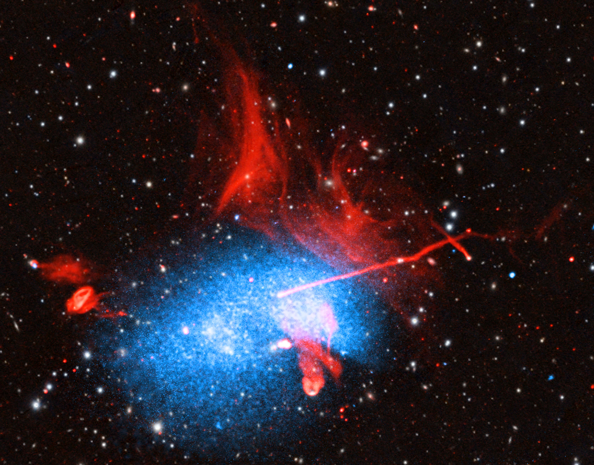
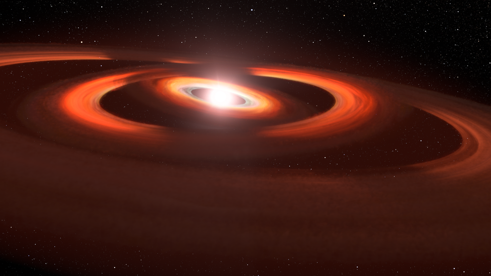
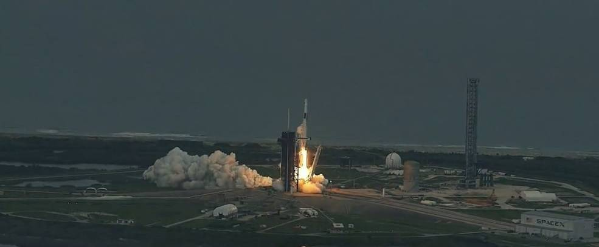
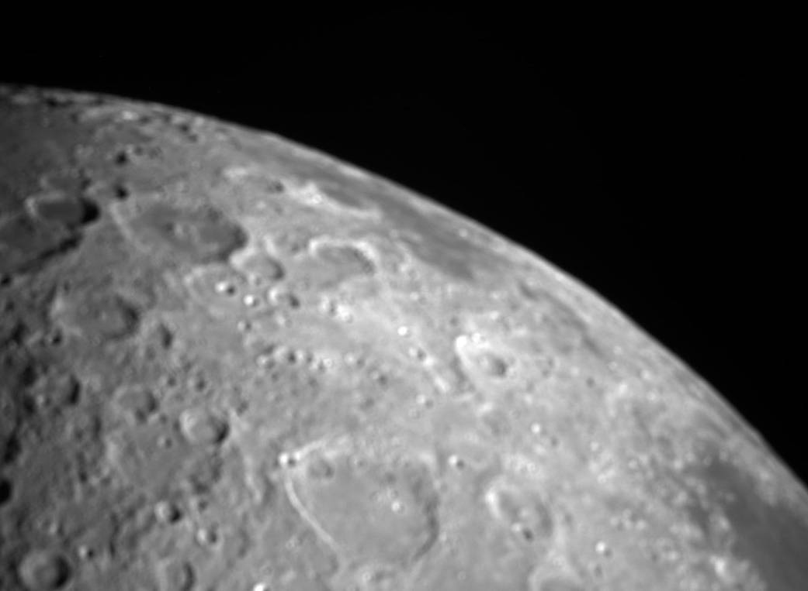
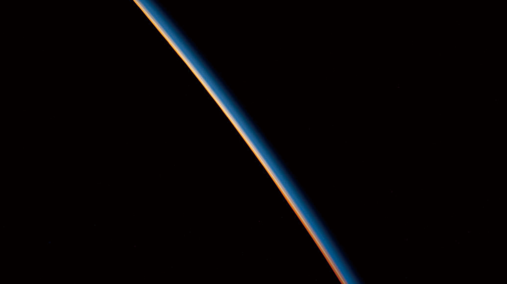

Galaxies Go on Deep Dive, Leave Fiery Tail Behind
은하단이 코마 은하단으로 뛰어들어 거대한 과열 가스 꼬리를 남기고 있습니다. 천문학자들은 이것이 은하군 뒤에 있는 가장 긴 알려진 꼬리임을 확인했으며 우주에서 가장 큰 구조 중 일부인 은하단이 어떻게 엄청난 크기로 성장하는지 더 깊이 이해하는 데 사용했습니다.
은하단이 코마 은하단으로 뛰어들어 거대한 과열 가스 꼬리를 남기고 있습니다. 천문학자들은 이것이 은하군 뒤에 있는 가장 긴 알려진 꼬리임을 확인했으며 우주에서 가장 큰 구조 중 일부인 은하단이 어떻게 엄청난 크기로 성장하는지 더 깊이 이해하는 데 사용했습니다.

천문학자들은 적어도 세 개의 은하단 사이에서 장엄하고 지속적인 충돌을 포착했습니다 . NASA의 Chandra X-ray Observatory , ESA(European Space Agency)의 XMM-Newton 및 3개의 전파 망원경에서 얻은 데이터는 천문학자들이 이 뒤죽박죽인 장면에서 무슨 일이 일어나고 있는지 분류하는 데 도움을 주고 있습니다 . 이와 같은 충돌과 병합은 은하단이 오늘날 볼 수 있는 거대한 우주 건물로 성장할 수 있는 주요 방법입니다. 이들은 또한 우주에서 가장 큰 입자 가속기 역할을 합니다.

James Webb Space Telescope에서 촬영한 이 이미지에는 먼지와 밝은 성단의 섬세한 트레이서리가 있습니다. 가스와 별의 밝은 덩굴손은 막대나선은하 NGC 5068에 속하며, 이 이미지의 왼쪽 상단에 밝은 중앙 막대가 보입니다. Webb의 기기 두 대에서 합성한 것입니다. NASA 관리자인 빌 넬슨(Bill Nelson)은 금요일 폴란드 바르샤바에 있는 코페르니쿠스 과학 센터에서 학생들과 함께 한 행사에서 이미지를 공개했습니다.

캘리포니아 실리콘 밸리에 있는 NASA Ames 연구 센터 과학자들의 최근 세 가지 연구는 NASA의 카시니 미션 데이터를 조사하고 토성의 고리가 젊고 일시적이라는 증거를 제공합니다. 물론 천문학적 용어입니다. 새로운 연구는 고리의 질량, "순도", 들어오는 파편이 얼마나 빨리 추가되는지, 그리고 그것이 시간이 지남에 따라 고리가 변하는 방식에 어떤 영향을 미치는지 조사합니다. 이러한 요소를 종합하면 해당 요소가 얼마나 오래 있었는지, 남은 시간을 더 잘 알 수 있습니다.

광대한 은하단이 NASA/ESA 허블 우주 망원경이 촬영한 이 이미지의 중앙에 숨어 있습니다. 물에 잠긴 바다 괴물이 표면에 파도를 일으키는 것처럼 이 우주 거대괴수는 주변 시공간 왜곡으로 식별할 수 있습니다. 성단의 거대한 질량은 시공간을 휘게 하여 성단 너머 먼 은하에서 오는 빛을 굴절시키는 중력 렌즈를 만듭니다. 이 이미지에서 볼 수 있는 뒤틀린 줄무늬와 빛의 호가 그 결과입니다. 수많은 다른 은하들이 성단을 둘러싸고 있으며 전경의 별 몇 개가 눈에 띄는 회절 스파이크가 이미지 전체에 흩어져 있습니다.

TW Hydrae는 천만년 미만이며 약 200광년 떨어져 있습니다. 초기에 우리 태양계는 약 46억년 전의 TW Hydrae 시스템과 비슷했을 것입니다. TW Hydrae 시스템은 지구에서 우리의 시야와 거의 정면으로 기울어져 있기 때문에 행성 건설 야드의 정중앙을 볼 수 있는 최적의 목표입니다. 두 번째 그림자는 2021년 6월 6일에 얻은 관측에서 발견되었으며, 이는 별 주위 원반의 그림자를 추적하도록 설계된 다년간 프로그램의 일환입니다. 메릴랜드 주 볼티모어에 있는 우주 망원경 과학 연구소의 유럽 우주국 AURA/STScI의 John Debes는 TW Hydrae 디스크를 몇 년 전에 이루어진 허블 관측과 비교했습니다.

4명의 개인 우주비행사가 국제우주정거장에 대한 두 번째 개인 우주비행사 임무인 Axiom Mission 2(Ax-2)의 성공적인 발사에 이어 궤도에 진입했습니다. Axiom Space 우주비행사들은 5월 21일 일요일 오후 5시 37분 EDT에 플로리다에 있는 NASA 케네디 우주 센터의 발사 단지 39A에서 이륙했습니다. SpaceX Falcon 9 로켓은 Ax-2 승무원 Peggy Whitson 사령관, 파일럿 John Shoffner, 임무 전문가 Ali Alqarni 및 Rayyanah Barnawi를 태운 회사의 Dragon 우주선을 우주에서 과학 연구, 봉사 활동 및 상업 활동을 수행하는 임무를 수행하기 위해 궤도에 진입시켰습니다.

CAPSTONE은 지난 5월 처음으로 지구의 GPS와 유사한 내비게이션 기술을 성공적으로 테스트하여 미래의 우주 임무가 달에서 보다 효율적으로 탐색하는 데 도움이 될 수 있는 기능을 발전시켰습니다. 우주선은 또한 5월 3일 CAPSTONE이 달에 근접 접근하면서 달의 북극 근처 달 표면을 보여주는 달의 첫 번째 이미지를 포착했습니다.

화성의 일몰은 독특하게 변덕스럽 습니다 . 하지만 NASA의 큐리오시티 로버는 지난 달 눈에 띄는 장면을 포착했습니다. 2월 2일 태양이 지평선 너머로 내려오면서 한 줄기 빛이 구름 둑을 비췄습니다. 이러한 "태양 광선"은 라틴어로 "황혼"을 의미하는 어두컴컴한 광선으로도 알려져 있습니다. 태양 광선이 화성에서 이렇게 명확하게 관측된 것은 이번이 처음입니다.

2023년 2월 17일 아르헨티나 해안에서 대서양 상공 269마일을 돌던 국제우주정거장 사진에서 지구 대기를 비추는 마지막 한 줄기 석양.

은하계는 무한한 별들의 노래가 울려퍼지는 신비로운 우주의 미로이다.

나사/ESA 허블 우주 망원경의 이 사진에서 밀도가 높은 구상 성단 NGC 6225가 반짝입니다.